Install Basha
This guide will teach you how to create, install and use your own free version of Basha. You'll have your own site which you'll be able to share with your friends and family.Basha runs on a free web-hosting service called Render which allows you to create your own Basha instance - in other words, you'll be able to duplicate our master copy into your own portal to share with friends and family. We promise that this quick and simple process will pay off in spades 😊. Continue reading to learn how to get Basha.
NOTE: At the time of this writing, Render has a limitation of 90 days for free service databases. It shouldn't have a huge impact, but there are some workaround steps you'll need to take. Make sure you read the section on Importing and Exporting. Click this link to begin installing Basha.NOTE: You may be asked to enter your credit card details. Render only uses this information for fraud prevention - you will not be charged.You should now see the app creation page (see below). The service group name will be the unique name of your Basha site; choose your name and click the Apply button at the bottom of the page.
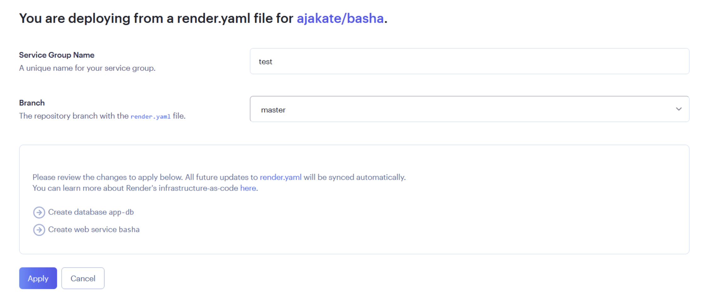
Render will usually take 10-30 minutes to build your site; you can track progress on your Render dashboard. When both line item statuses turn green, click the top Web Service item. There will be a link to your personal Basha site in the next page's title. Click this link to navigate to your site's sign-up page (see below).NOTE: It may take up to 30 seconds for the sign-up page to display. This typically only occurs the first time you access your site.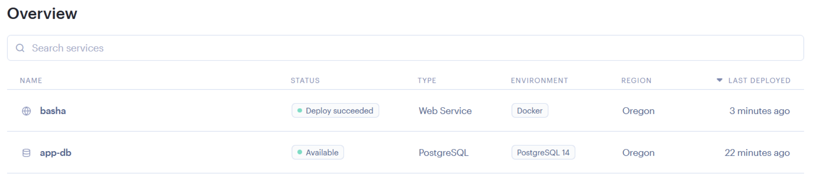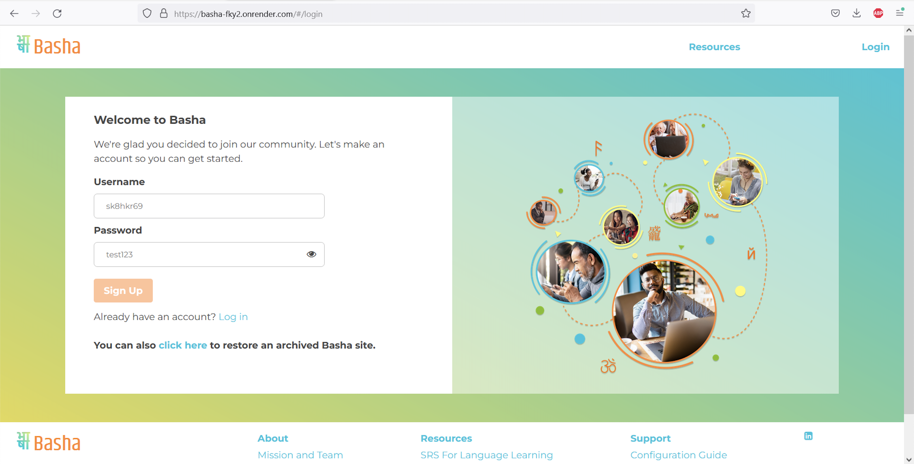
Backing Up and Restoring your Basha Site
We use Render to keep Basha free for our users; the downside of us using this service is that each Basha instance can only run for 90 days at a time. Because we value your learning, we've created a workaround feature that allows you to archive and reinstall your Basha instance cyclically.
displays a warning banner three weeks before you hit the 90-day limit. You can use that link to renew your Basha instance or use this URL (replace 'your-basha-site' with your site's real name): https://your-basha-site.onrender.com/#/backup at any time.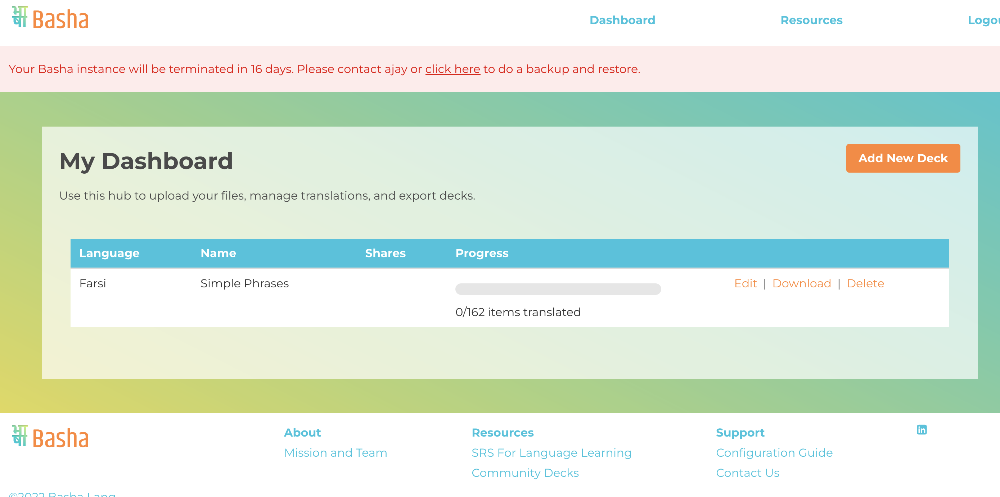
Click the Download button to create an archive of all of the site data. You should complete the rest of this process in one setting, as anything you do on your site after this point won't be saved until you restore the archive.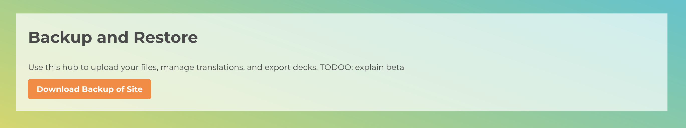
Go to your render dashboard. Click the second item in the main table (the type should be "PostgreSQL." Click Delete Database at the very bottom of the page and then confirm.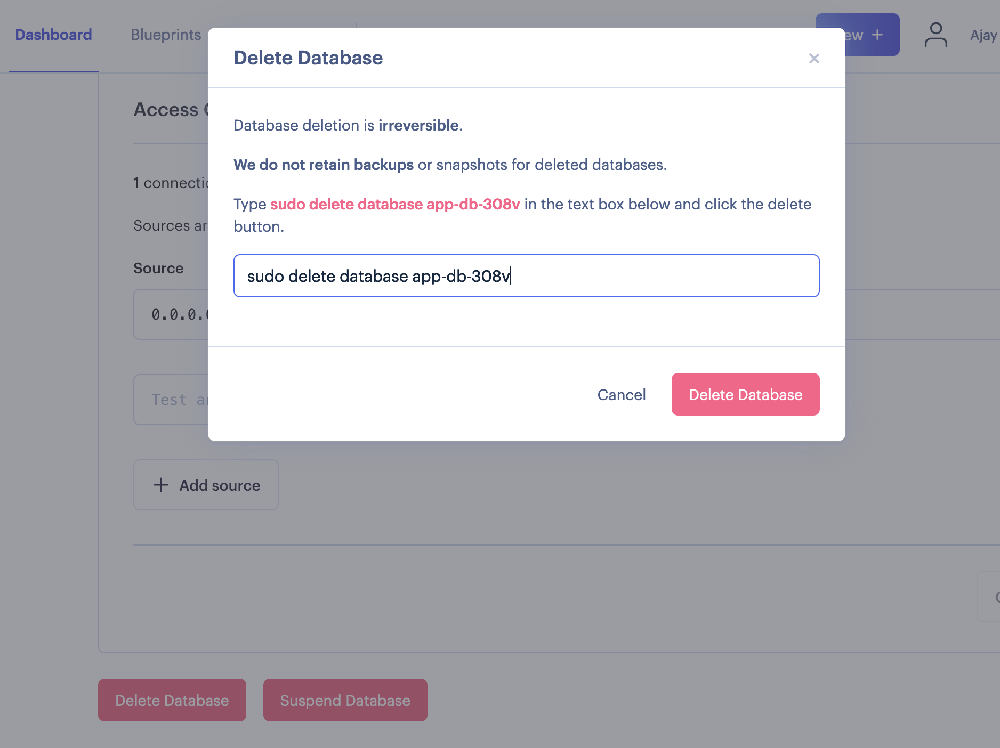
Click on the Blueprints tab at the top of the page. The table will contain a cell with the name of your Basha instance; click that item. 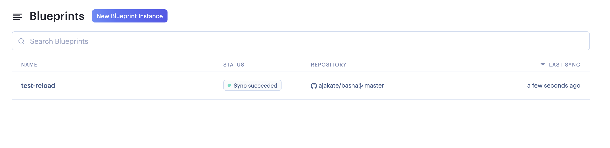
On the next page, click Manual Sync and then click Approve.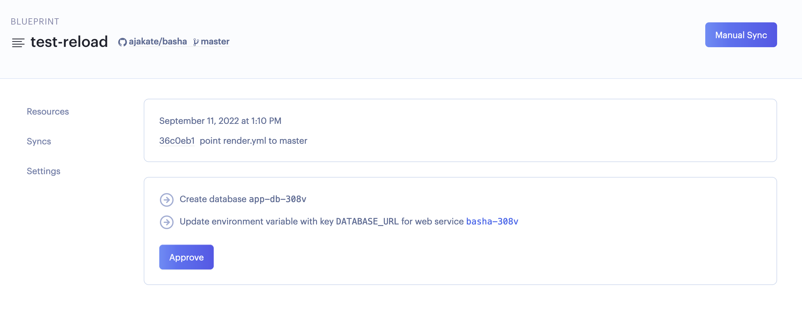
Within 5-10 minutes, you will have two services on your Render dashboard.NOTE: If either item has a "Service Failed" status, click the failed service, click Manual Deploy, and then click Deploy Latest Commit. Check your Render dashboard again in about 15 minutes to confirm both services are now available.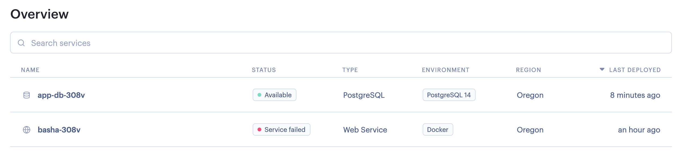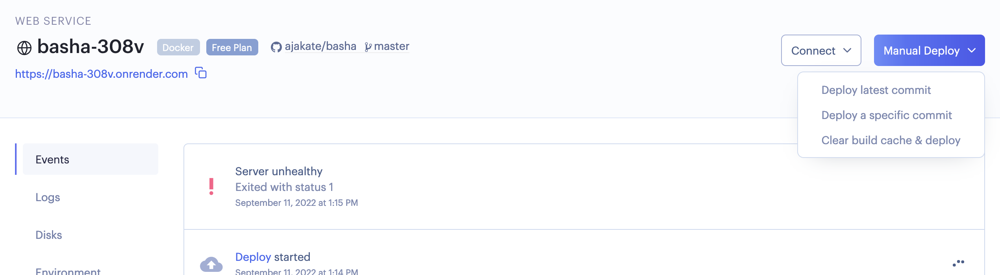
Your Basha instance will appear as a new install because we deleted the database; instead of creating a new account on the welcome page, click the Restore an Archived Basha Site link. Upload the archived file from step 2. You'll be prompted to log in. Your archives site will be restored with all of the original data and accounts.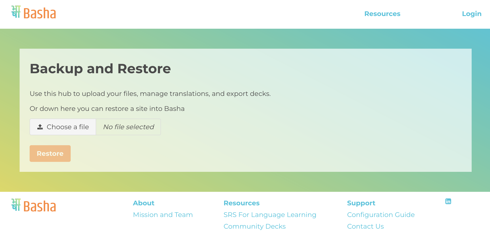